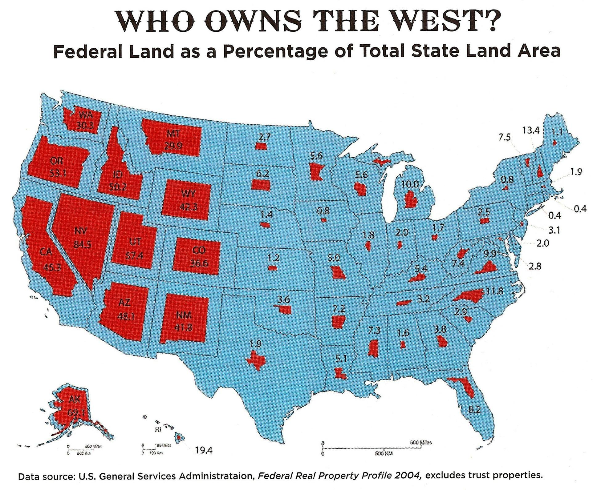
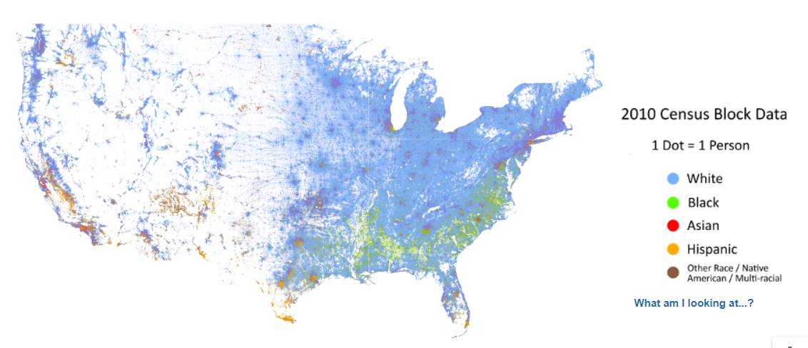

Hello!
Welcome to Week 1 of Web GIS
Overview of today's class
- Introductions
- Course Overview
- Create a simple web map in ArcGIS Online
- How to lie with maps
- Zoom Polls
- Introductions
Course Overview
3 Mains Goals of this Course:
- 1. Technical: students will be able to create interactive, online maps using ArcGIS Online & Leaflet.js
- 2. Effective Design: Students will have a deeper knowledge of effective map design & functionality
- 3. Critical Awareness: Students will develop a critical understanding that maps are not neutral representations of the world
This course is focused on visualization.
We will not focus on data management or statistics, however you should be conscientious of how these affect your maps.
Data will be provided for the course, but you are highly encouraged to use your own!
If you need help cleaning/geocoding data from other courses or projects, reach out to me.
Course Ecosystem
| Zoom | |
|---|---|
| Github |
|
| Blackboard |
|
Main Course Tools
Some AGOL Examples:
Some Leaflet Examples:
Pros/Cons of AGOL
| Pros | |
|---|---|
| Cons |
Pros/Cons of Leaflet
| Pros | |
|---|---|
| Cons |
Weeks 1-4: ArcGIS Online
Weeks 5-8: Leaflet.js
Let's talk about maps
A quick refresher on Thematic Maps
We will create interative thematic maps in this course, as opposed to general reference maps or topographical maps.
Thematic Maps: maps that visualize a certain topic or theme
Let's review common types of thematic maps:
- Choropleth
- Proportional Symbols
- Cartograms
- Dot
- Flow Map
Choropleth Maps use color or shading to show data over a defined area.
You'll see a lot of these.
Proportional Symbol Maps use symbols of varying sizes to show a quantitative value.
Can be any shape. Note the shape of the geographic unit itself is not augemented.
Cartograms distort land area to represent a variable.
Color is used to represent a second variable. (and third variable!)

Dot Density Maps use a dot to represent the distribution (or density) of a phenomenon.
Color is used to represent a second variable.
The famous John Snow Cholera map.
Heatmaps are a form of dot density maps
AKA Isopleth Maps if you want to be fancy

Flow maps show the movement of a unit or variable.
Color & symbol size are used to represent second & third variables
Color used to represent second variable
Minard's flow map of Napoleon's 1812 Russian campaign.
Symbol size & color used to represent second & third variable.
Features of ArcGIS Online
- Host Web Maps
- Host Data
- Share Maps
- Create organizational groups for collaboration
- Easily create web apps/story maps
Let's make a web map in AGOL
5 steps:
- Choose Basemap
- Add your Data
- Customize/Select Symbology
- Save
- Share the Finished Product
Assignment 1: Make an AGOL Web Map
What I do not want to see:

Questions?